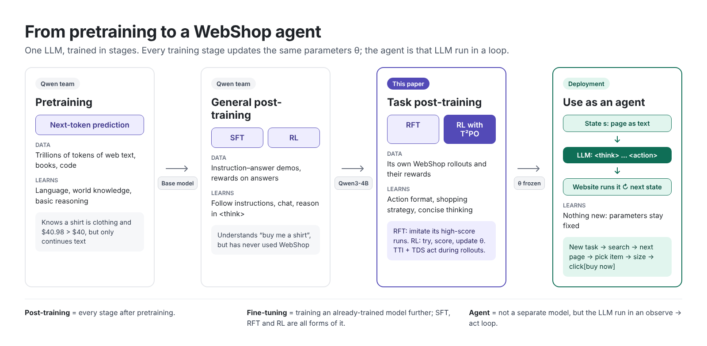
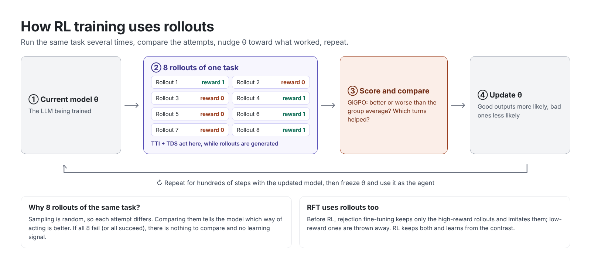
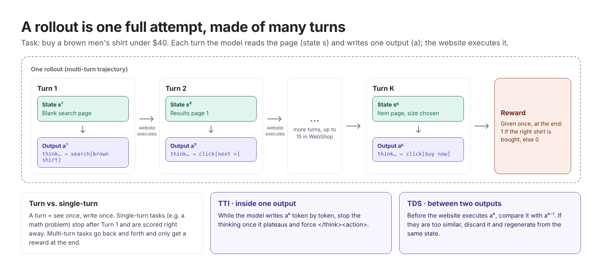
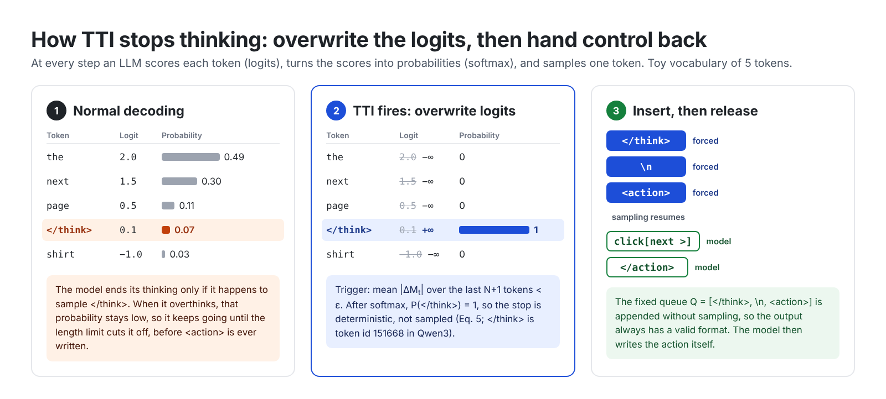
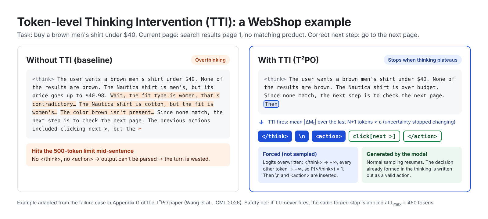
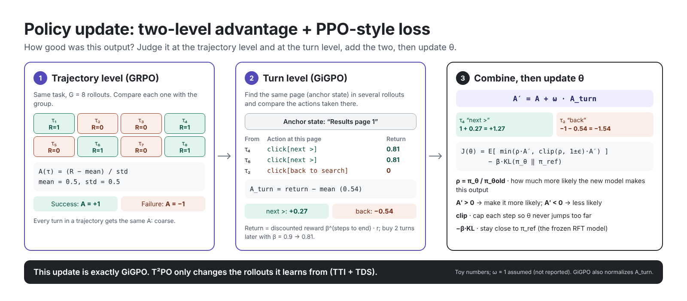

Reading T²PO: Taming Hesitation in Multi-Turn Agentic RL
Reinforcement learning for multi-turn LLM agents often collapses partway through training. T²PO argues the cause is hesitation: the agent overthinks within a turn and repeats itself across turns, and these low-information rollouts make gradients noisy. It reads a cheap uncertainty signal from the model's own token distributions and uses it during rollout generation to (1) cut the thinking short once that signal stops changing and (2) resample a turn that looks like a repeat of the previous one. The policy update itself is unchanged from GiGPO.
On this page12 sections
I recently presented this paper at a reading group. These are my notes, written for someone who knows some ML but has not worked on LLM agents. The first three sections build up the background in order: how an LLM agent is trained, what a rollout is, and what changes when a task takes many turns. If you know all three, skip to the example.
1. How an LLM agent is trained
An "agent" is not a separate model. It is an ordinary LLM run in a loop: the environment shows it a state, the model writes a response, the environment executes the action in that response and returns the next state. Everything the agent learns is stored in one place, the LLM's weights θ. Training an agent means updating θ so that, in the states it meets, it writes better responses.
Those weights are shaped in stages (Figure 1). Pretraining on large text corpora teaches language and world knowledge. General post-training by the model developer (supervised fine-tuning and RL) turns the base model into an assistant that follows instructions and reasons inside <think>. Qwen3-4B and Qwen3-8B, where this paper starts, are at that point. The paper then adds task-specific post-training: a short warm-up called RFT, followed by RL on the agent task. When training ends, θ is frozen and the model is deployed as the agent.

The RL stage is where T²PO lives, so it helps to state what one update does. The model attempts a task, the environment scores the result, and θ is nudged so that responses that led to good outcomes become more likely and responses that led to bad outcomes become less likely. What the model learns therefore depends on the attempts it produces, which brings us to rollouts.
2. Rollouts: the data RL learns from
A rollout (or trajectory) is one complete attempt at a task by the current model, recorded from start to finish together with its reward. Unlike supervised learning, RL has no fixed dataset: the training data is generated by the model being trained, and generated again after every update. Producing rollouts is also the expensive part of training, because it means running both the LLM and the environment.
Training follows the group-based recipe that has become standard since GRPO. For each task, the current model produces a group of rollouts (G = 8 in the paper). Sampling is random, so the attempts differ. Rollouts that end better than the group average get a positive advantage, the rest a negative one, and the update raises the probability of the former and lowers it for the latter. No value network is needed. If all rollouts in a group fail, or all succeed, there is no contrast and the group contributes no learning signal; DAPO's dynamic sampling drops such groups.
Rollouts also drive the warm-up. In rejection fine-tuning (RFT), the model plays the environment, low-scoring rollouts are discarded, and the model is fine-tuned to imitate the rest. This teaches the action format, so that RL starts with enough successful rollouts to compare against. RFT keeps only the good attempts; RL learns from the contrast between good and bad ones.

3. Multi-turn: when one attempt takes many steps
In a single-turn task such as a math problem, a rollout is one response, and it is scored right away. Agent tasks are multi-turn. A turn is one "see the state, write a response" step, and a rollout is a sequence of turns. In WebShop, the main benchmark of the paper, the state is a shopping page rendered as text, together with the task and a short memory of the last two turns. The model must search, browse, pick a product, choose options and buy, within 15 turns. Each response has a fixed format: reasoning inside <think>…</think>, then exactly one command inside <action>…</action>, such as search[brown men shirt] or click[next >].

Three things get harder in this setting. The reward is sparse: only the final purchase is scored, so it is unclear which of the many turns deserves the credit. Rollouts are long, so each one costs more to generate. And mistakes compound: a wasted turn early on eats into a fixed turn budget. The paper is about one consequence of this: what happens to training when many of the turns in the batch carry little information.
4. The intuition, in one example
The idea behind T²PO fits in one sentence: when the agent stops gaining new information, stop and move on. Figure 4 shows it on one task, buy a brown men's shirt under $40, where the first results page has nothing that fits.

That is the whole method. The reward and the loss stay the same as in the baseline. The next sections explain why this waste destabilizes training and how "no new information" is measured.
5. The diagnosis: training collapse comes from hesitation
The paper opens with a familiar picture: strong multi-turn methods such as GRPO and GiGPO improve for a while, then the success rate drops sharply while the gradient norm and the KL divergence to the old policy spike. Whether a run collapses depends on the random seed.
Prior fixes worked either at the level of whole trajectories (filtering bad ones, as in DAPO's dynamic sampling or SimpleTIR's void-turn filtering) or by reshaping rewards. The authors argue the root cause is inefficient exploration, which they call hesitation, and that it shows up at two scales:
- Token level: overthinking. The reasoning keeps growing after it has stopped adding information. In one example from the appendix, the model re-checks the same contradictions ("men's shirt, but the fit type says women…") until it hits the 500-token output limit. No
</think>or<action>is ever written, the response cannot be parsed, and the turn is wasted, even though the correct move was simply to open the next page. - Turn level: going in circles. In another example, the agent searches, clicks a product, goes back, and issues the identical search again, burning its limited turn budget.
Both behaviours fill the training batch with long, low-information sequences. The claim is that this noise in credit assignment raises gradient variance and eventually destabilizes training. The fix, then, is to stop generating such rollouts in the first place, rather than to penalize them through the reward.
6. A cheap uncertainty signal from the model itself
At each decoding step the model outputs a probability distribution \(p_t\) over its whole vocabulary (about 152K tokens for Qwen3). Two standard summaries of how peaked it is:
$$H_t = -\sum_{i} p_t^{(i)} \log p_t^{(i)}, \qquad C_t = -\frac{1}{j}\sum_{i=1}^{j} \log p_t^{(i)} .$$Entropy \(H_t\) is high when probability is spread out. Confidence \(C_t\), the token confidence used in DeepConf, averages the negative log-probability over the top-\(j\) tokens: when the distribution is sharp, the runner-up tokens are nearly impossible and \(C_t\) is large. The paper argues each has a blind spot. With a 152K vocabulary, entropy ranges over \([0, \log V] \approx [0, 12]\), so a one-hot distribution and a 50/50 split between two tokens differ by only \(\log 2\). Confidence looks only at the top of the distribution and ignores how the remaining mass is spread. So the two are min-max normalized within a response and mixed:
$$M_t = \alpha\,\tilde H_t + (1-\alpha)\,(1-\tilde C_t), \qquad \alpha = 0.4 .$$Larger \(M_t\) means the model is less sure what to write next. A useful way to read it: high \(M_t\) marks the places where the model is making a decision. The paper's word cloud of the most uncertain tokens contains two kinds of words: discourse markers such as "so" and "then" (where the reasoning changes direction) and task words such as product names and attributes (where it picks what to buy). Neither mechanism below uses the level of \(M_t\) directly; both look at how it changes.
7. Token level: stop thinking once the signal flattens (TTI)
Averaged over the baseline's responses, \(M_t\) rises early in the response, peaks, then decays and flattens. The authors read the three phases as restating the task, actually deciding, and then circling. Token-level Thinking Intervention (TTI) cuts the response in the third phase. It tracks \(\Delta_t = |M_t - M_{t-1}|\) and, after a minimum prefix \(L_{\min}\), stops once the average change over a sliding window is negligible:
$$\frac{1}{N+1}\sum_{i=0}^{N}\Delta_{t-i} < \varepsilon \quad\text{or}\quad t \ge L_{\max}, \qquad N = 20,\; \varepsilon = 10^{-4},\; L_{\max} = 450 .$$Why not stop at the peak? Because the peak is where the decision is being made: it sits on product names and on the "then" that turns analysis into a plan. Cutting there removes exactly the content the action depends on. The sliding window also keeps a single uncertain token from triggering a stop.
The stop itself is a small piece of decoding surgery. At the next step, the logit of </think> is set to \(+\infty\) and every other logit to \(-\infty\), so the model emits </think> with probability 1. A fixed sequence </think>, \n, <action> is then appended without sampling, and normal sampling resumes so the model writes the action itself. The intervention fires at most once per response.

<action> guarantees the output can be parsed.
8. Turn level: resample a turn that repeats the last one (TDS)
Single-turn RL has a neat trick for wasted samples. DAPO's dynamic sampling drops prompts whose group is all-correct or all-wrong, since they carry no learning signal. In a multi-turn episode there is no per-turn accuracy to filter on, so Turn-level Dynamical Sampling (TDS) substitutes the uncertainty signal. Each turn gets a fingerprint, the geometric mean of its token signals, and consecutive turns are compared:
$$\Phi^k = \Big(\prod_{t=1}^{T} M_t^{k}\Big)^{1/T}, \qquad \Gamma^k = \lvert \Phi^k - \Phi^{k-1} \rvert .$$If \(\Gamma^k < \eta\) (with \(\eta = 10^{-3}\)), the model's internal state looks the same as on the previous turn, which suggests it is about to repeat itself. The turn is then discarded and regenerated from the same state, up to a resampling budget. Because this check happens before the action is sent to the environment, a discarded turn costs one extra generation but no environment step. (One note when reading: the prose in Section 4.3 describes the trigger as the turn deviating "too much", but the equation and the algorithm both regenerate when the change is too small. I follow the equation.)
9. The policy update is GiGPO, unchanged
After rollouts are collected, T²PO computes advantages exactly as GiGPO does. Two levels are added together:
- Trajectory level (GRPO-style): each rollout's return is compared with the other rollouts of the same task.
- Turn level (GiGPO's anchor states): when several rollouts reach the same page, the actions taken on that page are compared with each other using their discounted returns. This gives per-turn credit without a learned critic.
The combined advantage goes into a standard PPO-style clipped objective with a KL penalty to the frozen RFT model. A few supporting choices matter in practice: only the last two turns are kept in the prompt as memory, malformed outputs get a 0.1 format penalty, and the RFT warm-up described above.

This is the point I would stress most when explaining the paper: T²PO is a rollout-side method. Its loss and its advantage estimator are GiGPO's. What changes is which sequences end up in the batch. The appendix supports the "plug-and-play" framing by swapping GiGPO for GSPO: adding TTI + TDS on top of GSPO raises WebShop success from 85.18% to 91.79%.
10. What the experiments show
On Qwen3-4B (after RFT), averaged over three environment seeds:
| Method | WebShop score | WebShop success (%) | ALFWorld success (%) |
|---|---|---|---|
| GRPO | 80.02 ± 7.94 | 68.56 ± 4.11 | 77.35 ± 0.62 |
| GiGPO | 86.03 ± 4.18 | 73.83 ± 3.04 | 80.47 ± 2.43 |
| GiGPO + DAPO | 86.54 ± 9.81 | 74.02 ± 8.18 | 80.86 ± 1.37 |
| T²PO | 93.84 ± 0.22 | 81.64 ± 0.39 | 90.23 ± 1.38 |
Three things stand out to me:
- Stability is the headline. The WebShop success rate improves by about 8 points over GiGPO, but the spread across seeds shrinks from ±3.04 to ±0.39, and the training curves no longer collapse. That matches the paper's framing better than the mean gain does.
- It is cheaper, too. Successful trajectories use fewer tokens, outputs are about 20% shorter than GiGPO's under the same 500-token limit, and tasks finish in about 25% fewer turns during training.
- Each part matters, and so does RFT. Removing TDS drops WebShop success to 63.67, removing TTI to 73.27, and removing the RFT warm-up to 61.32.
The paper also compares against other ways of controlling thinking length on WebShop. A length-based reward reaches 65.87% success, a short-CoT cold start 71.29%, void-turn filtering 76.20%, and a fixed hard thinking budget 79.21%, against 81.64% for TTI + TDS. The paper also reports results on search-augmented QA, which I do not cover here.
11. Where it sits among related work
| Work | Signal | What it does with it |
|---|---|---|
| GiGPO | Shared anchor states | Turn-level credit assignment; T²PO's update and code base |
| DAPO | Group accuracy | Drops uninformative prompt groups; the inspiration for TDS |
| DeepConf | Token confidence | Filters or stops low-confidence reasoning at inference; source of \(C_t\) |
| ARPO | Entropy after tool calls | Branches more rollouts where uncertainty is high |
| AT²PO | Entropy | Turn-level tree search; expands high-entropy nodes |
| AEM | Response-level entropy | Rescales advantages instead of changing rollouts |
| RAGEN-2 | Mutual information | Shows entropy can miss "template collapse" |
The contrast with ARPO and AT²PO is instructive: they use uncertainty to add exploration where it seems valuable, while T²PO uses it to remove exploration that seems wasted. All three act on rollout generation rather than on the loss, which looks like where much of the action in agentic RL is right now.
12. Takeaways
- In multi-turn agentic RL, which sequences reach the batch can matter as much as how they are weighted.
- The model's own token distributions provide a nearly free, real-time signal for steering generation, with no extra model and no reward shaping.
- The results are strongest on stability: lower variance across seeds and no collapse, at lower token and turn cost.
References
- H. Wang et al. T²PO: Uncertainty-Guided Exploration Control for Stable Multi-Turn Agentic Reinforcement Learning. ICML 2026. Code.
- L. Feng et al. Group-in-Group Policy Optimization for LLM Agent Training. NeurIPS 2025.
- Z. Shao et al. DeepSeekMath (GRPO). 2024.
- Q. Yu et al. DAPO: An Open-Source LLM Reinforcement Learning System at Scale. 2025.
- Y. Fu et al. Deep Think with Confidence. 2025.
- S. Yao et al. WebShop. NeurIPS 2022.
Figures are original illustrations based on the paper (click any figure to open it full size); numbers are taken from the paper's tables. Corrections are welcome at qin.681@osu.edu.